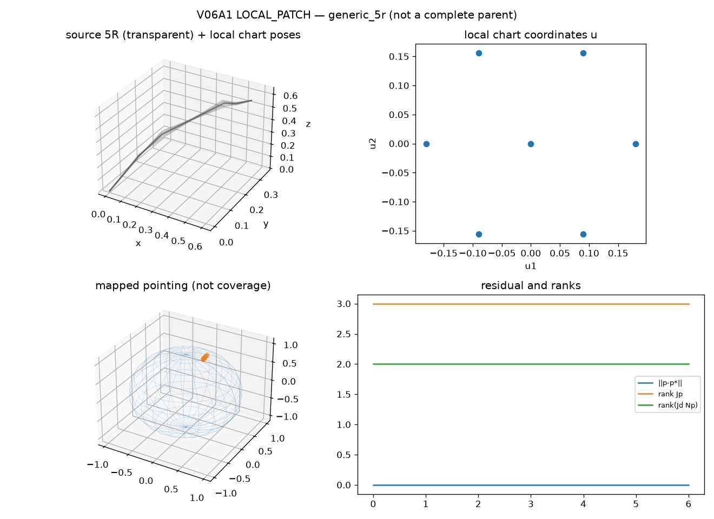

generic_5r at a regular seed. This is
LOCAL_PATCH, not a complete parent component,
not S^2 coverage, and not a DecompositionCertificate.
component_ids are empty. Joint limits are not_modeled.| accepted samples | 7 |
|---|---|
| max position residual (m) | 6.096e-12 |
| seed FD Jp error | 1.627e-10 (verified=True) |
| fibers | 0 |
| chart id | generic_5r_local_hex_000 |

Reproduce:
PYTHONPATH=src python -m grashof_workspace.spatial_experiments.v06a1 --outdir results/kinematic_decomposition/v06a1